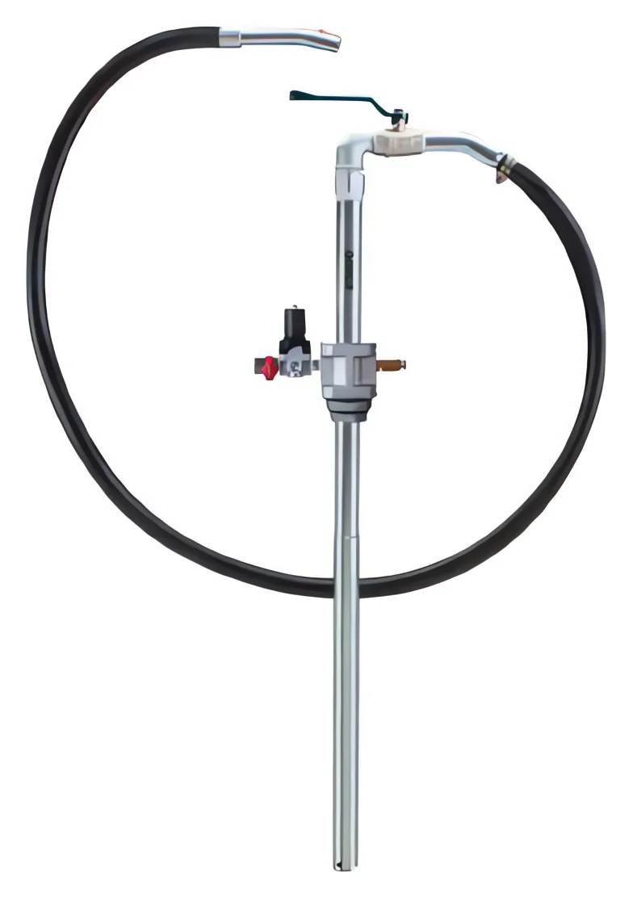

GROZ · Oiling Equipment
Air Operated Transfer Pump
CAT NR ATP/1H · ORD NR 45318
| CAT NR (catalogue number) | ATP/1H |
|---|---|
| ORD NR (order number) | 45318 |
| Box quantity | 4 |
| Description (printed in table) | Pump with steel suction tube & discharge hose |
Open in the catalogue The catalogue PDF, page 144
From the GROZ Fluid Handling CC-07 catalogue. Not yet verified: these details were read from the printed catalogue automatically; check the catalogue page before ordering.